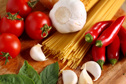

About Utah Native Cooking:
History of Utah Native Cooking |
Where we stand out |
Online Presence |
Where We're Headed |
In The News
How it all Began...
 In 1997, Master Chef Pierre DeBois moved to Utah from New York where he
owned and managed a small restaurant called Ma Maison (My Home). His
restaurant specialized in French Nouvelle cuisine. Once in Salt Lake City,
he realized that the average Utahan doesn't have much appreciation for
high cuisine. Pierre and his family were invited to a neighborhood block
party one summer and it was there he had his first encounter with Native
Cooking of Utah. Pierre noticed how much the locals enjoyed the items
brought to this pot luck dinner. They often went back for seconds or
thirds. How could he capture this enthusiasm for eating and translate it
into his own cooking? In order to answer this question, he began a year
long quest to find out the reason for the success of Utah cuisine.
In 1997, Master Chef Pierre DeBois moved to Utah from New York where he
owned and managed a small restaurant called Ma Maison (My Home). His
restaurant specialized in French Nouvelle cuisine. Once in Salt Lake City,
he realized that the average Utahan doesn't have much appreciation for
high cuisine. Pierre and his family were invited to a neighborhood block
party one summer and it was there he had his first encounter with Native
Cooking of Utah. Pierre noticed how much the locals enjoyed the items
brought to this pot luck dinner. They often went back for seconds or
thirds. How could he capture this enthusiasm for eating and translate it
into his own cooking? In order to answer this question, he began a year
long quest to find out the reason for the success of Utah cuisine.
Pierre discovered there are some things that set apart Utah cooking from
others:

- Simplicity in preparation
- Inexpensive ingredients
- Ethnic variations available
- Feeds large amounts of people
- Ease of Serving and Cleanup
Native Cooking of Utah Goes Online...
So in 2010, Pierre DeBois began gathering recipes for an online cookbook
titled: Native Cooking of Utah. Everywhere he could, he begged, borrowed
or stole the secret recipes of popular Utah cooks. Many of these recipes
had been handed down from generation to generation. In fact, the most well
known recipe for green jello even was honored with its own Olympic pin.
The web site for Native Cooking of Utah organizes the recipes by area of
the state. For example, salt water taffy from Salt Lake City, and Bear
Lake Raspberry ice cream from Bear Lake. Chef Pierre DeBois has traveled
the state to gather these recipes. Read the Guestbook to see comments and
testimonials from satisfied cooks.
Looking to the Future...
Native Cooking of Utah has become one of the most popular cooking sites in
the Western U.S. with over 10,000 hits per week. Chef Pierre DeBois has
plans to expand the site to include cooking utensils and kitchen
accessories used or hand-made by native Utahans. Not only can you use this
web site to help you to create true Utahan cuisine, now you can look the
part. You will find these added treats online after January, 2013.
Press Releases
Good Eating, October 2011:
"Master Chef Pierre DeBois captures the Native Cooking of Utah in his
online web site: Native Cooking of Utah. Browsing his web site is like
having a family reunion where everyone brings along their favorite recipes
and shares them. If you are an Utahan and no longer live in the state,
these recipes will make you home sick for that down home cooking."
Utah Travel Council's Top 100 Sites:
"Site Number 66 - Whether you are living in Utah or just visiting, you can
cook like a true native if you use Native Cooking of Utah as your guide.
This web site will allow you to come up to speed and fit in like a native
Utahan right away. Reap praise from strangers and surprise your family
with your down home cooking. You won't have to worry about storing
leftovers with these tried and true recipes."
Back to top ^